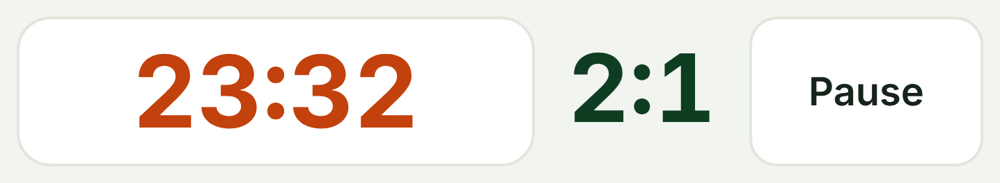
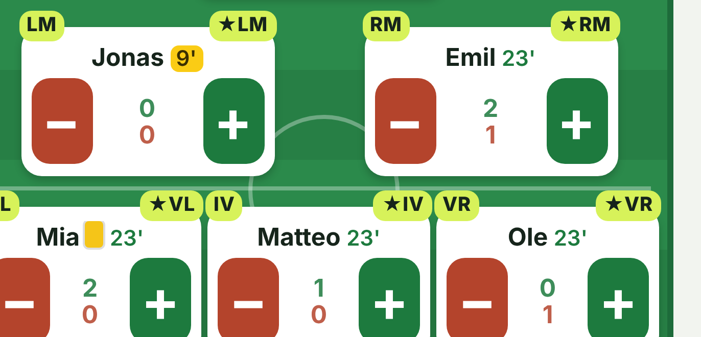
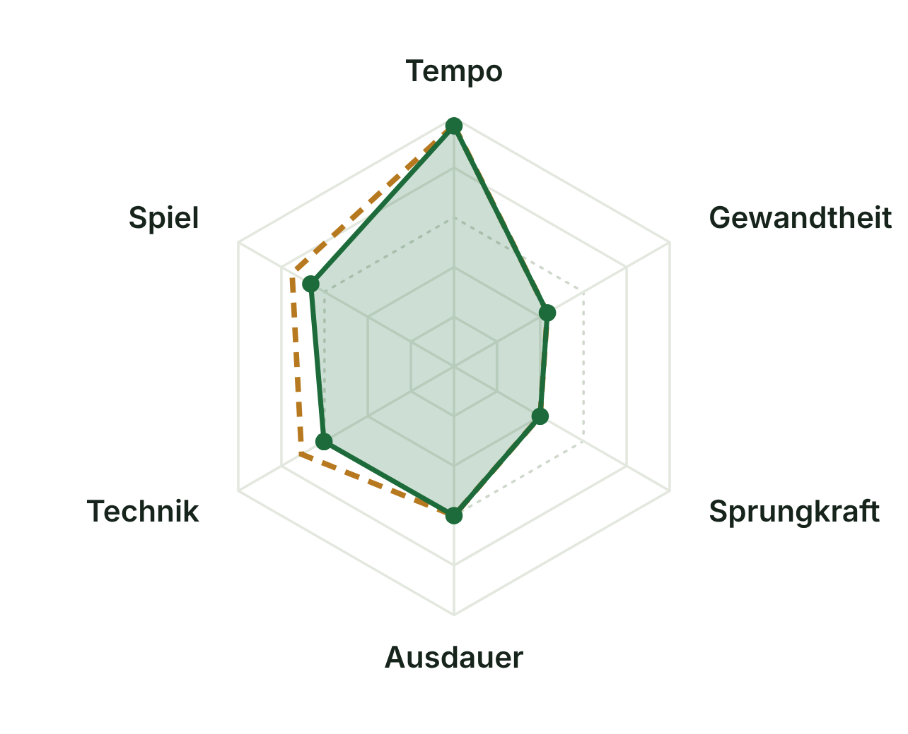
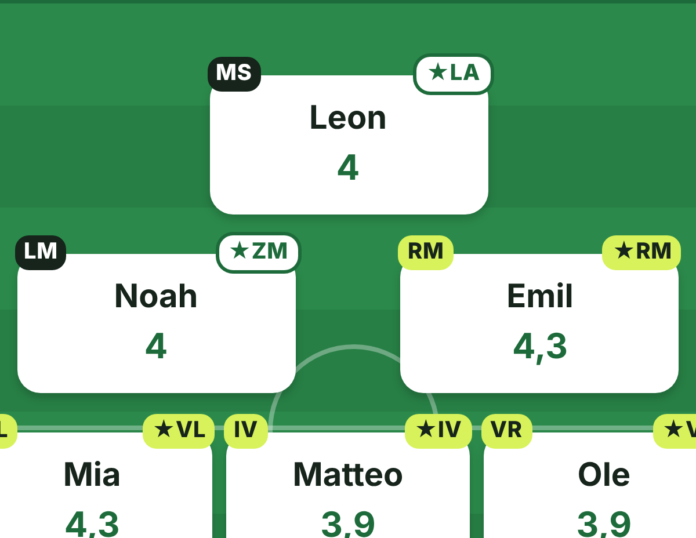
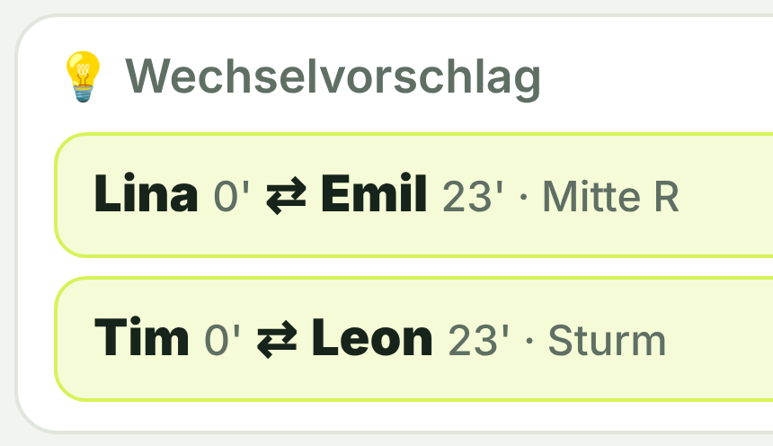
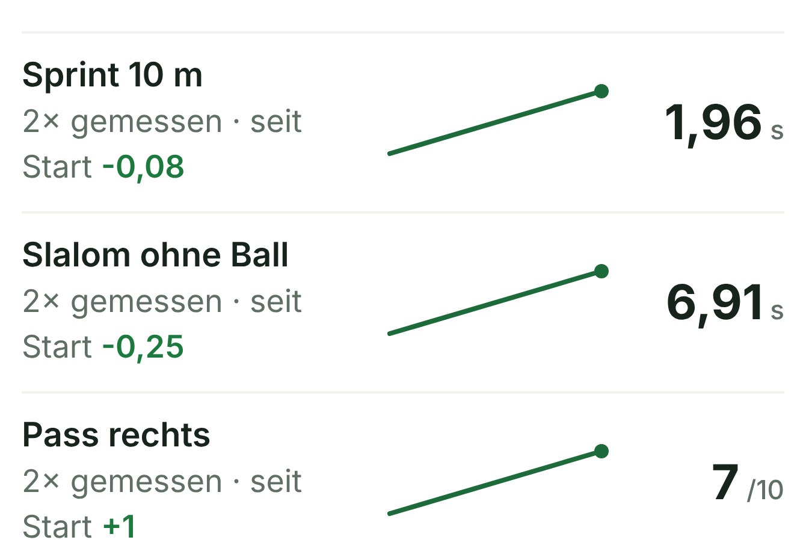

Weniger Bauchgefühl.
Mehr Überblick.
Die Trainer-App für deine Mannschaft – von der Jugend bis zu den Senioren.
Kostenlos · für jede Mannschaft
Kostenlos · für jede Mannschaft


Live am SpielfeldrandPlus & MinusTore & VorlagenKartenSpielminute

Gerechtes StärkenprofilTrainerbeobachtungLeistungsmessungLive-Erfassung

Beste AufstellungStärkste Elf★ beste PositionFunino bis 11 gegen 11

Faire SpielzeitSpielzeit-AmpelWechselvorschlägeTurniermodus

Entwicklung im BlickPotenzial & FormZieleSaisonbericht
In 3 Schritten startklar
1QR-Code scannen
2Zum Home-Bildschirm
3Kader anlegen
✓ kostenlos ✓ ohne Anmeldung ✓ offline ✓ mehrere Mannschaften ✓ mit Co-Trainer teilen

cschwarte82.github.io/Wacker